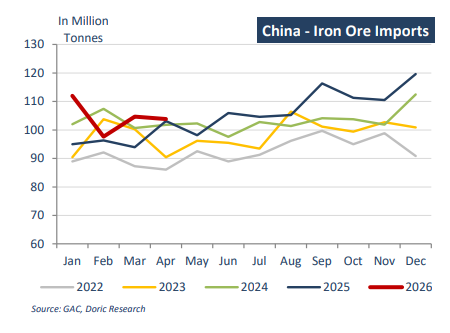
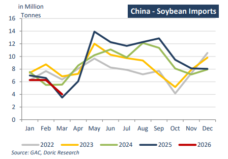

Market attention this week remained firmly centred on the summit between Presidents Donald Trump and Xi Jinping in Beijing, drawing natural comparisons with Trump’s earlier visit to China during his first administration. In contrast to that period, which was dominated by escalating tariffs, increasingly confrontational rhetoric and significant disruption across global supply chains, the current dialogue has taken on a more calibrated tone, with both sides demonstrating a clearer preference for maintaining communication channels and avoiding a renewed deterioration in bilateral relations. While the underlying strategic tensions remain structurally unchanged, the shift in tone has nonetheless been interpreted as a modestly stabilising development for global markets.
Although the meeting did not produce any substantive policy outcomes, the general tenor of discussions helped to temper nearterm concerns around an escalation in trade tensions. Reports indicating continued engagement on potential increases in Chinese purchases of U.S. agricultural commodities further reinforced the perception that both economies retain a mutual incentive to preserve a functioning trade framework. This is particularly relevant in the current environment of uneven global growth, tighter financial conditions and elevated geopolitical fragmentation, all of which continue to weigh on broader business sentiment and investment visibility.
From a dry bulk perspective, the direct freight impact remained limited, though sentiment was marginally underpinned by the reduced probability of a sharp deterioration in U.S.-China relations. A more stable bilateral backdrop would, over time, enhance visibility across key trade corridors, particularly for agricultural cargoes such as soybeans and grains, while also supporting a more predictable environment for industrial production and downstream demand for core bulk commodities, including iron ore and coal. Nevertheless, given the persistence of structural frictions – ranging from tariffs and industrial policy divergence to ongoing supply chain realignment – the market continues to treat diplomatic developments as a sentiment driver rather than a fundamental catalyst for demand rerating.
Against this macro backdrop, China’s steel and raw materials trade continued to display a clear divergence in April. Exports of rolled steel products declined by 9.2 percent year-on-year to 9.5 million tonnes, reflecting softer external demand conditions, intensifying trade protection measures in key importing regions, and rising logistical costs associated with geopolitical disruptions. In contrast, iron ore imports remained resilient, increasing by 0.7 percent year-on-year to 103.9 million tonnes, lifting cumulative January-April volumes to 418.6 million tonnes, up 8 percent year-on-year. This underlying strength has been supported by sustained blast furnace utilisation, relatively firm steel mill margins and stable pig iron output, while supply conditions have benefited from improved seasonal flows from Australia and Brazil. Looking ahead, iron ore imports are expected to remain broadly well supported, with incremental upside potential from new capacity ramp-ups such as Simandou, although seasonal disruptions and holiday-related fluctuations are likely to introduce short-term volatility in arrival patterns.

In contrast, China’s coal import profile softened further in April, with volumes declining to 33.1 million tonnes, representing a 14 percent year-on-year decrease and a 12.5 percent month-on-month decline on a daily-rate basis. This brought cumulative imports for JanuaryApril to 149.4 million tonnes, down 2.1 percent year-on-year. The weakness was primarily driven by a narrowing import arbitrage, as rising seaborne coal prices – partly influenced by geopolitical tensions in the Middle East – reduced the competitiveness of imported cargoes relative to domestic supply. With domestic pricing remaining comparatively more attractive, import appetite was consequently restrained despite otherwise stable underlying consumption indicators. Looking ahead, coal imports are expected to remain highly responsive to relative pricing dynamics, with freight developments and arbitrage conditions likely to determine whether any meaningful recovery in volumes materialises over the coming months.
In the agricultural segment, however, China continued to provide a more supportive demand signal. Soybean imports rebounded sharply in April to 8.48 million tonnes, more than doubling March volumes and increasing by 40 percent year-on-year. This brought cumulative imports for January-April to 25.2 million tonnes, up 8.5 percent yearon-year, underpinned by robust Brazilian export availability and improving logistical throughput. Expectations of additional U.S. cargoes remain in focus, particularly in light of ongoing trade discussions, as market participants assess the potential for a gradual recalibration of bilateral agricultural flows. Looking ahead, soybean imports are expected to remain firm, with monthly arrivals likely to exceed 10 million tonnes over the April-June period, supported by seasonal demand patterns, strong South American supply availability and a gradually improving import pipeline across key origins.

Overall, despite divergent trends across individual commodity segments, underlying dry bulk fundamentals continue to point towards a broadly constructive environment. Iron ore flows remain resilient, agricultural demand is demonstrating clear cyclical strength, and coal volumes – while softer – are primarily reflecting price-driven rather than demand-driven constraints. Importantly, freight markets are still benefiting from a combination of steady cargo flow, relatively disciplined fleet growth and intermittent disruptions across key loading regions. Taken together, this has resulted in a backdrop where sentiment remains cautiously optimistic, with dry bulk earnings supported at levels that remain healthy by historical standards, even as macro uncertainty and policy risk continue to shape short-term volatility rather than structural direction.
Data source:Doric